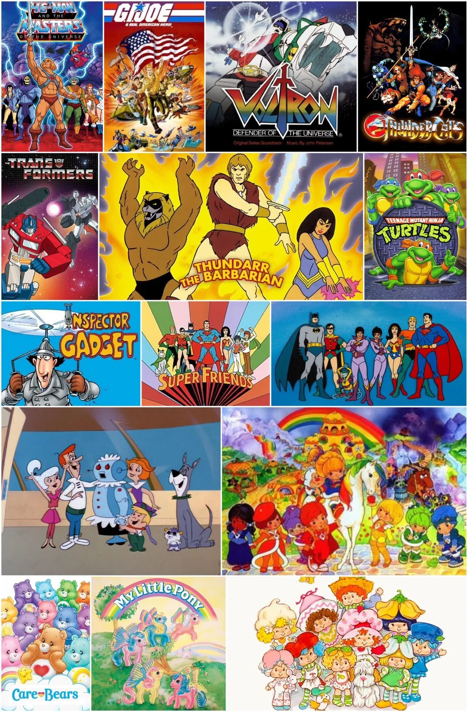

When we talk about culture, it is easy to think first about other people: other countries, other traditions, other languages. It took me a long time to recognize that I also have a culture, even though it often felt invisible to me because it is just the environment where I grew up. I was shaped by Midwestern U.S. culture, by white American norms, and by many unspoken assumptions about what is considered standard or default.
As I have gotten older, I have become more aware of how much those norms center certain voices and experiences while pushing others to the margins. I do not always feel fully at home inside the culture I come from. There are parts of it, such as the focus on individualism, productivity at all costs, and the tendency to avoid uncomfortable truths, that I find myself questioning again and again. That discomfort has become part of my identity as well.
The Stories That Shaped Me
Some of my earliest ideas about who I wanted to be came from 80s cartoons. Shows like Rainbow Brite, She-Ra, and Care Bears did not use the language of “cultural identity,” but they absolutely talked about courage, fairness, friendship, and standing up against cruelty or indifference. They showed me worlds where communities were strongest when everyone’s unique strengths and colors were recognized.
At the same time, the real world around me did not always match those values. The voices that were amplified most often belonged to people who looked like me and shared similar backgrounds, while other perspectives were treated as additions or side notes. That tension, between the inclusive, colorful worlds I saw in stories and the narrower version of the world I saw in real life, pushed me to question what I had been taught to treat as “normal.”
Learning to See My Own Culture
One of the most important shifts for me has been learning to see my own culture as something specific rather than universal. The way I was taught history, the kinds of holidays that were celebrated, and the people held up as heroes in school all reflected particular choices. Those choices centered white, Western, and often U.S.-centric narratives. Recognizing that does not mean rejecting everything from my background, but it does mean understanding that it is only one lens among many.
As I have learned more about other cultures and histories, I have become more aware of the limitations of my own early education. There are entire communities whose struggles, achievements, and everyday lives I barely heard about. Realizing that has made me more intentional about seeking out different stories and listening to people whose experiences do not match my own.
Living at the Edges
In some ways, I feel as though I live at the edges of my own culture. I understand it from the inside, but I do not always move through it in the expected ways. Being neurodivergent means I often notice things that other people take for granted, such as the unspoken rules in a room, the assumptions built into a conversation, and the ways certain voices are centered while others are ignored. That awareness can be exhausting, but it also gives me a different vantage point.
That “edge” space has become part of my cultural identity. I am close enough to recognize the patterns of the dominant culture I grew up in, but distant enough to question them. It helps me notice moments when my culture assumes it should be the default, and it nudges me to pause and ask, “Who else is here? Whose experience is missing?” My neurodivergence does not sit outside my cultural identity. It shapes how I see, feel, and interpret the culture around me.
This in-between position has also made me more empathetic toward other people who are navigating spaces that were not built with them in mind. This may be because of race, language, disability, gender, or any other aspect of identity. I do not claim that our experiences are the same, but I recognize the strain of constantly adjusting yourself to fit expectations. That recognition is a significant reason why I care about making room for multiple perspectives and ways of being.
How I Carry My Identity Forward

Today, my cultural identity includes both where I come from and the choices I make in response to it. I am shaped by white Midwestern U.S. culture, but I do not want to be defined only by its limitations. I want to be someone who uses that awareness to build bridges instead of walls, someone who can recognize when my own background is being centered and intentionally shift the focus so that other voices can be heard as well.
In the language of my childhood cartoons, I want to add my color to the world without drowning out anyone else’s. That means continuing to examine my own assumptions, listening more than I speak when I am learning about other cultures, and staying open to being changed by what I learn. My cultural identity is not a static label; it is an ongoing process of understanding where I come from, who I want to be, and how I can move through the world in a way that makes more space for others.